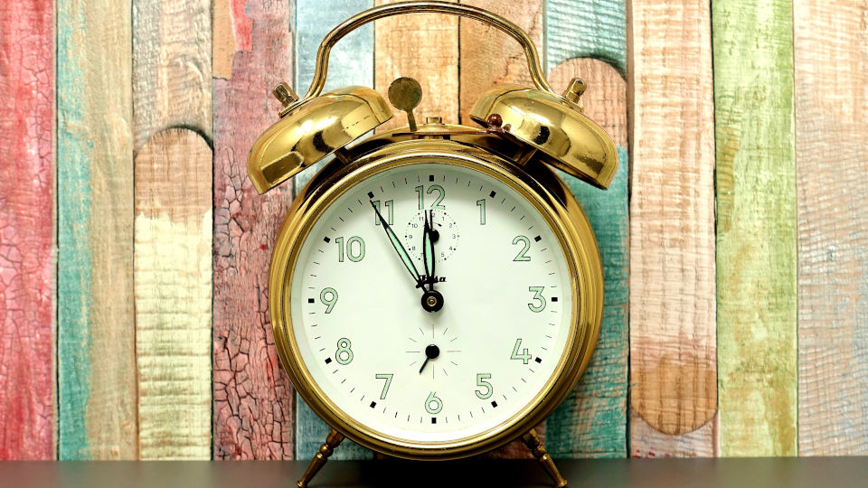
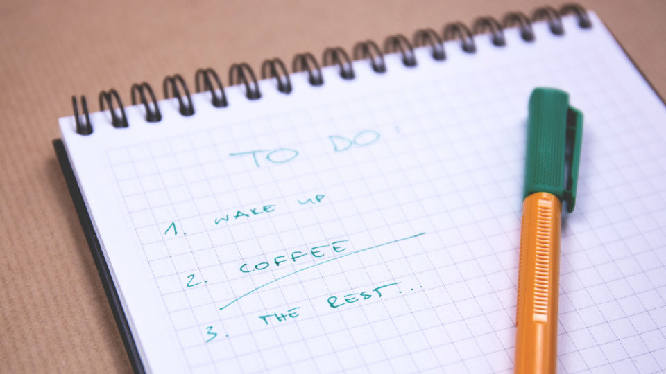

How to focus?
Improve your efficiency
Agnieszka Małaszkiewicz at Fractal Soft
- times full of connections
- online life
- notifications
- struggle to stay focus
- pandemic force to stay home
- fucus is a luxury
Notes:
- feel irritation, chaos, exhaustion
- lose focus
- more work to do
- step back and different perspective
Notes:
- 7 years of work remotely for customers
- from office & home
- digital nomad during travels
- Agnieszka Małaszkiewicz
- full-stack developer
- interested in good code standard, refactoring, testing
- co-owner of Fractal Soft company
Environment set up Real work
- prepare an environment
- day-by-day work
Environment set up
- what is around us?
- help focus or distract us
Eliminate distractions
- distractions are around
- loud music
- a hanger
- an uncomfortable chair
- eliminate those things
- **Common distractions**
Head
- one big stream of distractions
- new idea for dinner
- shopping list
- next steps for current work
Pen & paper
- anything pops up in my head
- put it directly to the paper
Phone
- Turn off notifications, WiFi
- Turn on AirPlane mode
- Flip the phone
Computer
- Distraction and a tool
- Close social media, communicators, games
- Turn off the music
Email
- do not read emails before noon
- my time for a break
1 workspace = 1 app
- Ubuntu with an Ambiance theme
- 4 workspaces
1 workspace = 1 app
Mailbox - Thunderbird
Browser - Google Chrome
Text editor - VS Code
Communicator - Slack
Terminal - Guake
- access the console by clicking the F12 key.
One screen only
- helps me in better focus
- eliminates the temptation to turn on distractions
- YouTube video
- social media
Work triggers

- one place only for work
- specific browser
- headphones without music
- something which triggers work habit
Real work
Day before

- few minutes to set priorities for the next day
- What is the most important?
- From what should I start?
- What else I need to take care of tomorrow?
Start early morning
- 7 AM
- quiet and calm time
- pure focus
The most challenging task
- the most energy
- the most important and challenging
Set a break
- after 2-3 hours - break
- clean workspace
- close useless tabs in the browser or text editor
- grab a snack
- check emails, or communicate with the team
- stretch a little bit
Next focus block
- 3 focus blocks per day max
- grouping similar tasks together
- do not switch context too often
- switching between screens, workspaces,
- a mouse or a keyboard
Summary
Take care of your environment
Remove distractions
Plan your work day
Set your work routine
- Take care of your environment
- Remove all possible distractions
- Plan your day ahead
- Set your work routine
One more thing
- bad day
- problem with focus
- it's fine
- allow to do less
- energy for next day
Agnieszka Małaszkiewicz
agnieszka (at) fractalsoft (dot) org